| Submitted by | |
|---|---|
| Guide | |
| Department / Institute | |
| Date | 25 November 2026 |
Crowd crushes and stampedes develop within seconds, so a safety system must detect danger both accurately and quickly. This project builds an AI/ML system that watches a crowd in two independent ways, through CCTV video and through the 5G mobile network that the crowd's phones are connected to, and runs at the 5G network edge so that alerts arrive in milliseconds. A video model trained only on normal footage of the public UCSD Ped2 benchmark flags unusual events with a frame-level AUC of 0.974 (future-frame prediction U-Net). A network model detects dangerous crowding and stampedes from 5G observations (phones per cell, handovers, density and speed from network positioning) with 98.2% accuracy. Because no public dataset contains CCTV and 5G data of the same crowd, a joint simulation was built in which each event is filmed and sensed at the same time; a combined video + 5G model trained on it reaches macro-F1 0.950, against 0.924 for 5G only and 0.823 for video only, and stays reliable when either source fails. A 5G edge-computing simulation shows that edge processing delivers alerts in about 7.2 ms versus 58.7 ms from the cloud, that a URLLC network slice protects safety traffic when the public's phones load the network, and that an ML model choosing edge or cloud per situation is right 94.0% of the time. A web application demonstrates everything live.
| Part | What it does | Data | Key result |
|---|---|---|---|
| Model 1: video anomaly detection | Flags unusual objects and motion in CCTV video | UCSD Ped2 (real) | AUC 0.974 |
| Model 2: 5G crowd risk | Detects dense crowds and stampedes from network data | Simulated 5G crowds | 98.2% accuracy, macro-F1 0.966 |
| Combined video + 5G model | Uses camera and network data of the same event together | Joint simulated events | macro-F1 0.950; 97.1% of danger caught, 3.6% false alarms |
| Edge vs cloud over 5G | Measures alert delay for processing at the edge or in the cloud | Discrete-event 5G simulation | 7.2 ms (edge) vs 58.7 ms (cloud) |
| Network slicing | Priority lane for safety traffic | Same simulation | 9.8 ms vs 90.4 ms at 90% public load |
| ML offloading decision | Chooses edge or cloud for each situation | 500 simulated situations | Right 94.0% of the time |
| Web application | Runs all of the above live in a browser | - | 5 pages (Section 9) |
Large gatherings such as festivals, pilgrimages, stadium events and busy railway stations carry a risk of crowd crushes and stampedes. Control-room operators cannot watch every CCTV screen at once, and an alert that arrives late is of little use. Two technologies can help. AI video analytics can watch every camera continuously, and 5G networks can carry video from many wireless cameras, sense the crowd through the phones connected to them, and run AI on edge servers placed right next to the base station.
The video model is trained and tested on real public video. The 5G network, the edge server and network slicing are simulated in Python, because real operator data is private and no physical 5G equipment was available. The AI processing times used in the simulation are real measurements on the project laptop (NVIDIA RTX 5050 GPU and CPU).
| Concept | Plain explanation | Used for |
|---|---|---|
| Anomaly detection | Learning what "normal" looks like and flagging anything that does not fit, without needing examples of every possible danger. | Model 1 |
| Autoencoder | A neural network that compresses an image and rebuilds it. Trained only on normal scenes, it rebuilds unusual things badly; the rebuild error is the anomaly score. | Model 1 v1 |
| Future-frame prediction (U-Net) | The network sees a few frames and predicts the next one. Normal walking is easy to predict; a bike or a cart moving differently is not. U-Net is an image network with "skip connections" that keep fine detail. | Model 1 v2 (final) |
| AUC (ROC) | A score from 0.5 (guessing) to 1.0 (perfect) for how well anomaly scores separate abnormal frames from normal ones at every possible threshold. | Model 1 results |
| Knowledge distillation | A small "student" network learns to copy a big "teacher" network, so it is much smaller and faster but keeps part of the accuracy. | Edge model |
| CNN | Convolutional neural network: the standard network for images, learning edges, shapes and motion patterns. | Combined model video branch |
| XGBoost | A strong machine-learning method that combines many small decision trees. Works very well on tables of numbers. | Model 2, offloading |
| LSTM | A neural network for sequences that remembers what happened earlier in a time series. | Model 2 comparison |
| Macro-F1 | Accuracy measure that treats every class (normal, dense, stampede) equally, so rare dangerous classes count as much as the common normal class. 1.0 is perfect. | Model 2, combined model |
| 5G gNB, UE | gNB = the 5G base station (tower or small cell); UE = user equipment (a phone). | 5G simulation |
| Handover, SINR | Handover: a phone switching from one cell to another as it moves. SINR: signal quality. | Model 2 features |
| Network positioning | The network estimates where phones are (5G supports positioning to a few metres). Only counts per 10 m zone are used. | Density heatmap |
| MEC (edge computing) | Multi-access Edge Computing: a small server next to the 5G base station, so data does not travel to a faraway cloud. | Edge vs cloud |
| Network slicing (URLLC / eMBB) | Splitting one 5G network into virtual lanes. URLLC = ultra-reliable low-latency lane (safety cameras); eMBB = normal high-bandwidth lane (public phones). | Slicing study |
| Discrete-event simulation | A program that simulates a system event by event (a frame is sent, arrives, is processed) to measure delays and queues. | Edge vs cloud |
📷 Cameras 📱 Public's phones
│ frames │ (network data collected
▼ ▼ by the gNB automatically)
════════════════ 5G RAN (gNB small cells) with NETWORK SLICING ════════════════
🚨 URLLC slice: safety cameras + alerts │ 👥 eMBB / best effort: public traffic
══════════════════════════════════════════════════════════════════════════════
│ │
▼ ▼
┌──────────────────────── ⚡ MEC EDGE SERVER (next to gNB) ────────────────────────┐
│ 🧠 Model 1: video autoencoder 🧠 Model 2: network crowd-risk (XGBoost) │
│ (lightweight student) + positioning-based density heatmap │
│ └──── 🧠 Combined model (trained on both) ────┘ │
│ ▼ │
│ 🚨 Alert: "Stampede risk at zone X" → security staff │
│ 🧠 ML offloading decision: process here, or send to cloud when edge is busy │
└──────────────────────────────────────┬──────────────────────────────────────────┘
│ 5G core → internet (20-100 ms RTT)
▼
☁️ CLOUD: big model on GPU, storage, retraining
| Component | Role | Implementation |
|---|---|---|
| CCTV cameras | Film the crowd | UCSD Ped2 videos (real); rendered overhead camera for joint events (simulated) |
| People's phones + 5G cells | The network senses phones per cell, handovers, positions | 5G crowd simulator: 9 small cells, 3GPP path-loss model |
| 5G network with slicing | Carries video and alerts; URLLC lane for safety traffic | Discrete-event simulation |
| MEC edge server | Runs the AI next to the tower | Simulated, using the measured CPU speed of the small model |
| Cloud | Runs the most accurate model, far away | Simulated, using the measured GPU speed of the v2 model |
| AI models | Model 1, Model 2, combined model, offloading model | PyTorch, XGBoost, scikit-learn |
| Web application | Live demonstration | React frontend + FastAPI backend |
| Real | Simulated |
|---|---|
| UCSD Ped2 videos; Model 1 training and accuracy; AI speeds measured on real hardware; the web application | 5G network data (Model 2); joint video + 5G events (combined model); 5G radio, edge server, cloud and slicing |
A public benchmark recorded by a fixed camera overlooking a pedestrian walkway (Mahadevan et al., 2010). Normal = people walking; anomalies = bikes, skateboarders, carts and small vehicles. The 16 training videos (2,550 frames) contain only normal behaviour; the 12 test videos (2,010 frames, 1,648 of them anomalous) come with official frame-level labels. Frames were converted to grayscale and resized (128×128 for v1, 256×256 for v2).
A 200 m × 200 m venue covered by a 3×3 grid of 5G small cells at 3.5 GHz. 800-2,600 people move around: 5% carry no phone and 10% carry two. Three scenarios are simulated: normal (wandering, safe attractions, harmless rushes such as people hurrying to a train), gathering (the crowd packs into one spot) and stampede (gathering, then sudden panic with people fleeing at 2-5 m/s). Every second the network side records 9 features:
| Feature | Meaning |
|---|---|
| total_phones | Phones connected in the venue |
| max_cell_phones | Phones on the busiest cell |
| max_zone_density | People per m² in the densest 10 m zone, estimated from network positioning (5 m error) |
| density_growth_10s | How fast that density grew over the last 10 s |
| mean_speed, frac_fast | Average phone speed and share of phones moving faster than 3 m/s |
| handover_rate | Handovers per phone per second (rises when people run between cells) |
| max_cell_load | How busy the busiest cell is |
| mean_sinr_db | Average signal quality |
The ground truth is dense when any 10 m zone exceeds 2 people/m², and stampede while panic is in progress. 450 episodes of 180 s give 22,950 windows of 30 seconds.
The same simulator was extended so that one event produces both sensor streams. Every person's position is recorded every second; the 5G features come from their phones as above, and an overhead CCTV camera covering an 80 m × 80 m part of the venue is rendered from the same positions (96×96 pixels, one frame per second, paving texture and camera noise). 300 events were generated (100 per scenario), with three hard cases built in: night video (20% of events), few phones visible to the operator (20%, 60% of people invisible) and the danger outside the camera view (about 25%). The test set has 60 events: 7 at night, 15 with the danger outside the camera view and 13 with few phones.
A student autoencoder with 16× fewer parameters (220,005 vs 3,485,061) is trained to rebuild the input and to copy the big model's output. It runs in 2.6 ms per frame on a CPU, which makes it suitable for an edge server.
A discrete-event simulation follows every camera frame (13.8 KB JPEG, 10 fps): upload over a 250 Mbps 5G cell uplink shared with the public's phones, travel to the server, waiting in the queue, AI processing and the alert coming back. The edge is 1 ms from the tower with 2 workers running the small model at its measured CPU speed; the cloud is 20-100 ms away with many GPU workers running the v2 model at its measured GPU speed. With slicing, safety cameras get strict priority on the uplink (URLLC); without it, all traffic shares one queue.
For each of the 500 simulated situations, both edge and cloud are simulated, and the faster one (95th-percentile delay) becomes the label. XGBoost learns to predict it from what the system can observe: number of cameras, frame rate, public load, slicing on/off, edge busy share and cloud distance.
Before the joint dataset existed, the outputs of Model 1 (UCSD video) and Model 2 (simulated 5G) were paired artificially and combined with max, average or logistic regression. It is kept as a baseline (Section 7.4) and is superseded by the combined model.
| Model | AUC (whole frame) | AUC (worst patch) | AUC (final) |
|---|---|---|---|
| v2: future-frame prediction U-Net (final, cloud) | 0.883 | 0.937 | 0.974 |
| v1: autoencoder, big | 0.710 | 0.836 | 0.836 |
| v1: autoencoder, student (edge) | 0.678 | 0.793 | 0.777 |
Predicting the next frame raises the AUC from 0.836 to 0.974. For reference, the classic autoencoder of Hasan et al. (2016) reports about 0.85-0.90 on Ped2 and Liu et al. (2018) report 0.95. Without the per-video normalisation step, v2 scores 0.937, still far above v1.
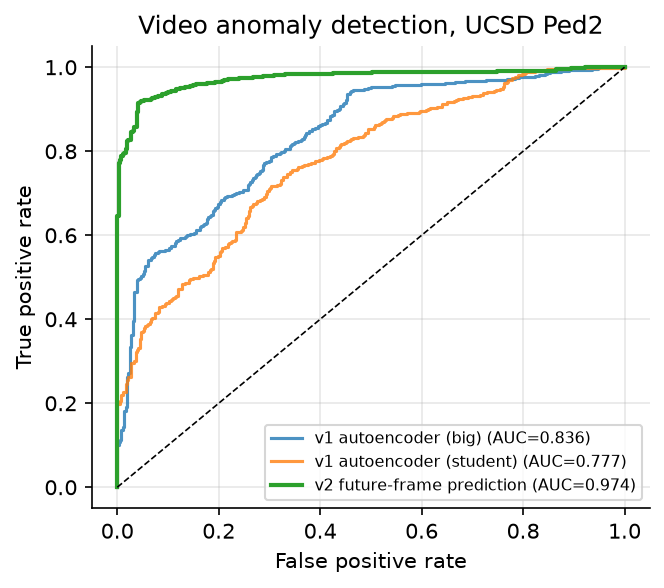

| Model | Parameters | Size | AUC | Edge (CPU) | Cloud (GPU) |
|---|---|---|---|---|---|
| v2: future-frame prediction U-Net (final, cloud) | 7,766,273 | 31.1 MB | 0.974 | 105.9 ms | 4.12 ms |
| v1: autoencoder, big | 3,485,061 | 14.0 MB | 0.836 | 10.9 ms | 1.24 ms |
| v1: autoencoder, student (edge) | 220,005 | 0.9 MB | 0.777 | 2.6 ms | 1.05 ms |
v2 is the most accurate but takes 105.9 ms per frame on a CPU, so it belongs in the cloud (4.1 ms on the GPU). The student model is the edge model.
| Detector | Accuracy | Macro-F1 | Stampede detection delay (median) | Stampedes missed |
|---|---|---|---|---|
| Rule baseline | 97.0% | 0.938 | 3.0 s | 0 / 35 |
| XGBoost (final) | 98.2% | 0.966 | 0.0 s | 0 / 35 |
| LSTM | 97.9% | 0.960 | 0.0 s | 0 / 35 |

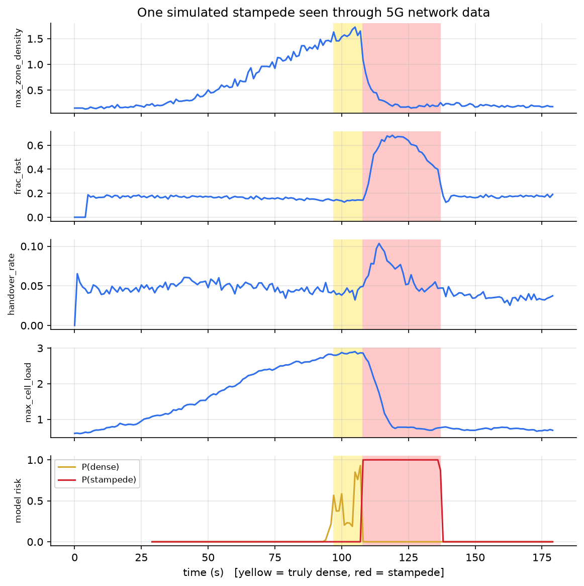
Macro-F1 on 60 unseen test events, by condition:
| Test condition | Video only | 5G only | Combined |
|---|---|---|---|
| All test events | 0.823 | 0.924 | 0.950 |
| Daytime, danger in view, phones normal | 0.889 | 0.939 | 0.954 |
| Night (dark video) | 0.432 | 0.661 | 0.667 |
| Danger outside camera view | 0.727 | 0.929 | 0.940 |
| Few phones visible | 0.816 | 0.840 | 0.946 |
| All test events | Video only | 5G only | Combined |
|---|---|---|---|
| Dangerous moments detected | 89.1% | 93.6% | 97.1% |
| False alarms | 10.4% | 4.7% | 3.6% |
| Stampede detection delay (median) | 1.0 s | 2.0 s | 1.0 s |
| Stampedes missed | 0 / 20 | 0 / 20 | 0 / 20 |
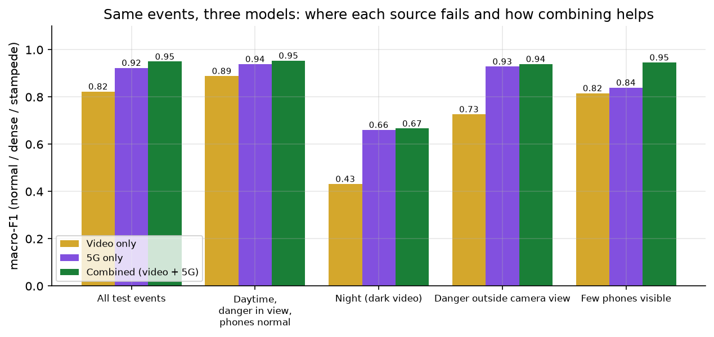
The combined model is best in every condition. When the danger is outside the camera view, video alone drops to 0.727 and the 5G branch keeps the combined model at 0.940. When few phones are visible, 5G alone drops to 0.840 and the video branch keeps it at 0.946. Night has only 7 test events, so its macro-F1 is unreliable; on them the combined model still detects 100.0% of dangerous moments with 0.0% false alarms (video only: 81.2% and 22.2%). What it finds hard at night is separating dense from stampede.
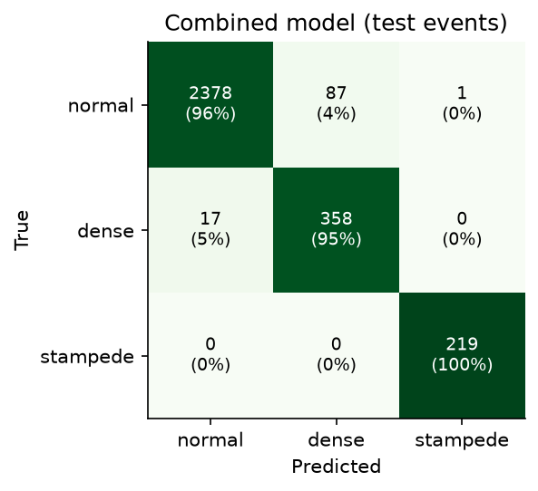
| Cameras | Edge, small model | Edge, big model on CPU | Cloud, v2 model on GPU |
|---|---|---|---|
| 1 | 7.2 ms | 15.5 ms | 58.4 ms |
| 10 | 7.2 ms | 15.9 ms | 58.7 ms |
| 20 | 7.4 ms | 850.2 ms | 59.0 ms |
| 40 | 7.7 ms | 6.0 s (overloaded) | 58.8 ms |
| 60 | 11.1 ms | 6.7 s (overloaded) | 58.9 ms |
| 80 | 324.6 ms | 6.8 s (overloaded) | 59.2 ms |
| 120 | 4.4 s (overloaded) | 6.6 s (overloaded) | 59.5 ms |
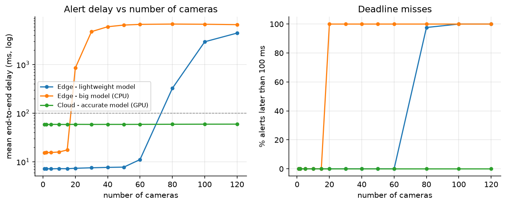
The edge is about 8 times faster while it has spare capacity. With too many cameras its queue grows and the cloud becomes better.
With 20 cameras at 90% public load, 95% of alerts arrive within 9.8 ms with a URLLC slice and 90.4 ms without it.
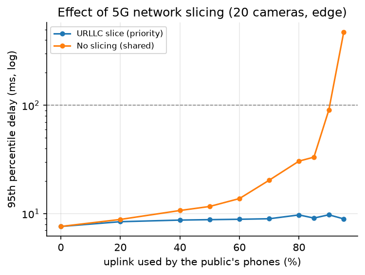
| Policy | Average 95th-percentile delay | Situations over 100 ms |
|---|---|---|
| Always edge | 387.8 ms | 40.7% |
| Always cloud | 118.9 ms | 32.7% |
| ML decides | 93.1 ms | 19.3% |
| Oracle (best possible) | 79.0 ms | 16.0% |
The ML model picks the faster place in 94.0% of unseen situations and comes close to the best possible choice (oracle).

| Method | AUC | Detection at 5% false alarms | Caught when camera blind |
|---|---|---|---|
| Video only (Model 1) | 0.861 | 0.709 | 0.058 |
| Network only (Model 2) | 0.901 | 0.807 | 0.780 |
| Fusion: max | 0.965 | 0.919 | 0.758 |
| Fusion: average | 0.966 | 0.921 | 0.762 |
| Fusion: learned (LogReg) | 0.966 | 0.918 | 0.753 |
The web application shows the whole system working live. It has two parts that run at the same time:
| Part | Technology | What it does |
|---|---|---|
| Frontend | React 19, Vite, Recharts | The pages in the browser: controls, charts, heatmaps and video |
| Backend | Python FastAPI | Runs the models and simulations when a page asks, and returns the results as JSON |
| Worker processes | PyTorch | Video and combined-model inference runs in a separate process, so GPU (CUDA) code and XGBoost never share one Python process (that combination crashed on Windows) |
| Page | Backend endpoint | Runs | Time |
|---|---|---|---|
| Combined (video + 5G) | POST /api/combined | Simulates one event, renders its CCTV video, runs the 3 models | ~10 s |
| Video detection | POST /api/detect | Model 1 on every frame of an uploaded or chosen video | 10-20 s |
| 5G crowd monitor | POST /api/crowd | Simulates 3 minutes of crowd, runs Model 2 every second | ~6 s |
| Edge vs cloud | POST /api/edge | 5G edge/cloud simulation + ML decision | ~1 s |
| Results | GET /api/results | Reads the saved results and graphs | instant |
The main page. The user chooses an event (normal, gathering or stampede), the number of people and a random seed, and can make it harder with Night and Few phones visible. After Run event, the CCTV camera and the 5G density map of the same event play side by side. The blue box on the map is the camera's field of view, so the user can see whether the danger is visible to the camera. At the top, the verdicts of the combined, video-only and 5G-only models are shown for the current second next to the true state.
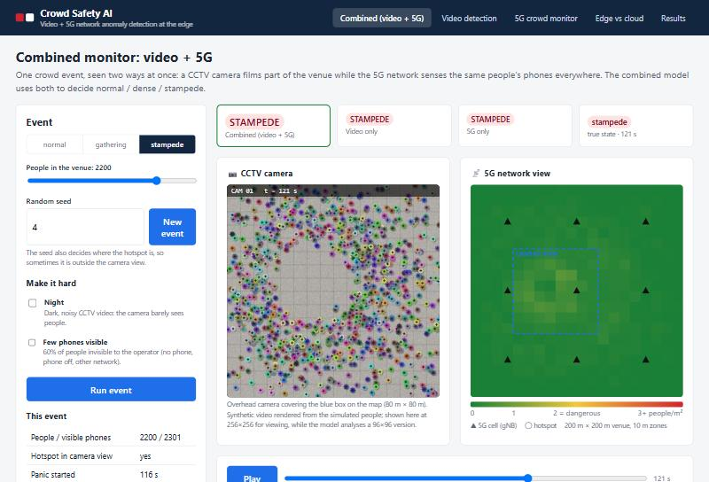
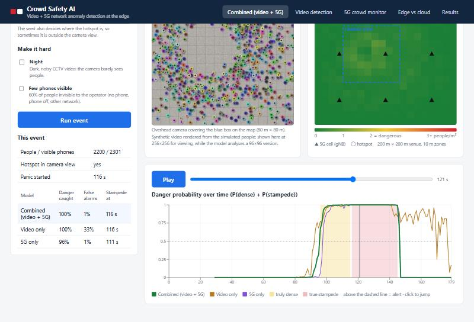
In this event (2,200 people, panic at 116 s), the combined model caught 100% of dangerous moments with 1% false alarms and flagged the stampede at 116 s; video alone raised 33% false alarms.
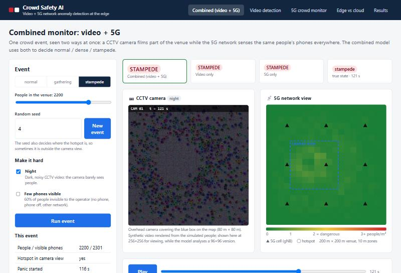
The user picks a UCSD test video or uploads a file, chooses the detection mode (the AI model, or the crowd-motion detector for any fixed camera) and presses Detect anomalies. The page shows the verdict, the first alert time compared with the true start, the annotated video (red border and "ANOMALY" on alert frames), the most unusual frame, the alert periods and the anomaly score over time.
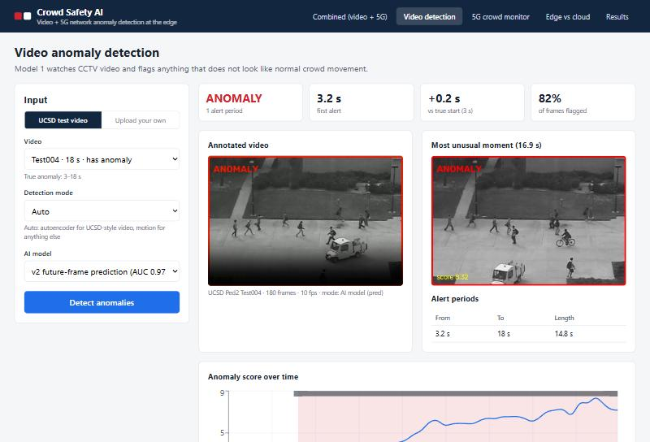
Shows a venue as the 5G network sees it. After Run simulation, the density heatmap (network estimate or true density) plays second by second with the 5G cells (triangles) and the hotspot (circle). On the right are Model 2's risk over time and three key network signals. Clicking the chart jumps to that moment.
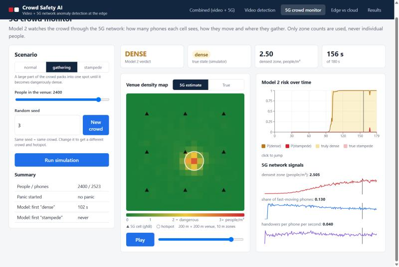
Sliders and presets describe the situation (cameras, frame rate, public load, edge busy, cloud distance, slicing on/off). The page shows the edge and cloud alert delays (95% of alerts arrive within this time), which one is faster, what the ML decision model picked and whether it was right, and how the delay grows as cameras are added.
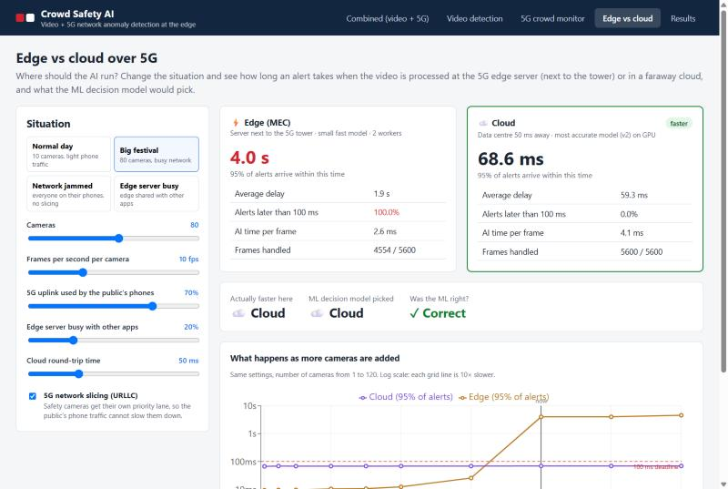
All final numbers and graphs in one place, read from the same saved results the report is built from, with a note on what is real and what is simulated. Graphs can be enlarged by clicking.
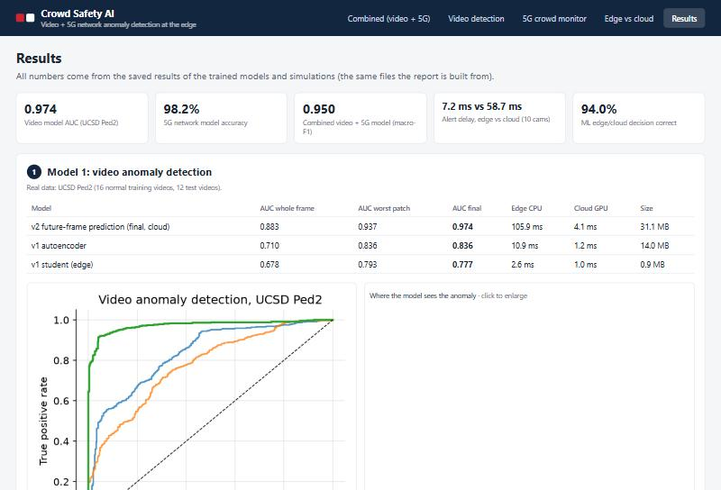
The project delivers a complete AI/ML pipeline for crowd safety over 5G. A future-frame prediction model detects video anomalies on a public benchmark with AUC 0.974; a distilled model makes edge deployment practical; 5G network data acts as a second crowd sensor that also locates dangerous zones; a combined model that sees the same event through the camera and the network reaches macro-F1 0.950 and stays reliable when either source fails; and edge processing with a URLLC slice and ML-based offloading delivers alerts within real-time limits. A web application demonstrates all of it live.
python run_all.py # full pipeline (about 55-60 min with a GPU) python run_all.py --skip-train # reuse trained models and data, rebuild results and this report # web application: two terminals python -m uvicorn api.server:app --port 8000 # in crowd-anomaly-5g npm run dev # in crowd-anomaly-5g/frontend, then open http://localhost:5173
| Folder | Contents |
|---|---|
| video_model/ | Model 1: data loading, v1 autoencoders, v2 prediction U-Net, evaluation, speed benchmark |
| network_model/ | 5G crowd simulator, Model 2, heatmaps |
| joint/ | Joint video + 5G dataset and the combined model |
| edge_cloud/ | 5G edge vs cloud simulation with slicing, ML offloading model |
| fusion/ | Earlier baseline (score-level fusion) |
| api/, frontend/ | Web application (FastAPI backend, React frontend) |
| samples/ | Sample videos and the scripts that make them |
| report/ | This report and the slides |